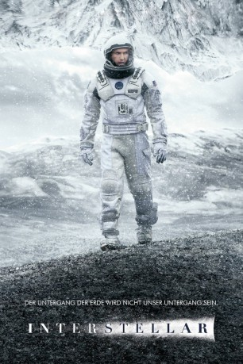
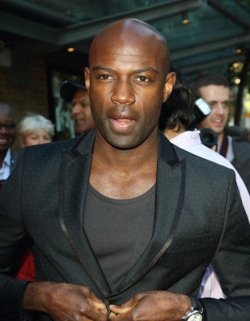

#692 Interstellar
Auszeichnungen: 1 Oscars gewonnen für 4 Oscars nominiert 1 BAFTA-Awards gewonnen
 gesehen am 08.05.2015
gesehen am 08.05.2015
 
 IMDB-Wertung: 8.6 / 10
IMDB-Wertung: 8.6 / 10  IMDB-TOP-Platzierung: 32
IMDB-TOP-Platzierung: 32  Metascore: 74
Metascore: 74 
Was Wissenschaftler, Politiker und Aktivisten seit Jahrzehnten prophezeien, ist eingetreten: Die Menschheit steht kurz davor, an einer globalen Nahrungsknappheit zugrunde zu gehen. Die einzige Hoffnung der Weltbevölkerung besteht in einem geheimen Projekt der US-Regierung, das von dem findigen Wissenschaftler Professor Brand geleitet wird. Der Plan sieht vor, eine Expedition in ein anderes Sternensystem zu starten, wo bewohnbare Planeten, Rohstoffe und vor allem Leben vermutet werden. Der Ingenieur und ehemalige NASA-Pilot Cooper und Brands Tochter Amelia führen die Besatzung an, die sich auf eine Reise ins Ungewisse begibt: Wurmlöcher sind so gut wie unerforscht und niemand kann mit Sicherheit sagen, was die Crew auf der anderen Seite erwartet. Ebenso ist unsicher, ob und wann Cooper und Brand wieder auf die Erde zurückkehren. Coopers Kinder, Tochter Murph und Sohn Tom, müssen mit Schwiegervater Donald zurückbleiben und auf seine Wiederkehr hoffen...
Jahr: 2014
Dauer: 169 Minuten
FSK: 12
Land: USA Studio: Paramount PicturesTonspuren: DTS - ,
Untertitel:
Auflösung: 1080p (1920x1080) Größe: 12697 MB
Genre: Abenteuer, Drama, Sci-Fi
Regisseur:  Christopher Nolan
Christopher Nolan
Drehbuch: Jonathan Nolan, Christopher Nolan
Soundtrack: Hans Zimmer
Darsteller:
 Ellen Burstyn als Murph, older
Ellen Burstyn als Murph, older Matthew McConaughey als Cooper
Matthew McConaughey als Cooper- Mackenzie Foy als Murph, 10 Yrs.
 John Lithgow als Donald
John Lithgow als Donald Timothée Chalamet als Tom, 15 Yrs.
Timothée Chalamet als Tom, 15 Yrs. David Oyelowo als School Principal
David Oyelowo als School Principal- Collette Wolfe als Ms. Hanley
 Francis X. McCarthy als Boots
Francis X. McCarthy als Boots Bill Irwin als TARS
Bill Irwin als TARS Anne Hathaway als Brand
Anne Hathaway als Brand- Andrew Borba als Smith
 Wes Bentley als Doyle
Wes Bentley als Doyle William Devane als Williams
William Devane als Williams Michael Caine als Professor Brand
Michael Caine als Professor Brand-  David Gyasi als Romilly
- Josh Stewart als CASE
 Casey Affleck als Tom
Casey Affleck als Tom- Leah Cairns als Lois
 Jessica Chastain als Murph
Jessica Chastain als Murph- William Dickinson als Coop
 Topher Grace als Getty
Topher Grace als Getty Matt Damon als Mann
Matt Damon als Mann- Jeff Hephner als Doctor
- Lena Georgas als Nurse Practitioner
- Elyes Gabel als Administrator
 Brooke Smith als Nurse
Brooke Smith als Nurse Russ Fega als Crew Chief
Russ Fega als Crew Chief- Cici Leah Campbell als NASA Scientist , uncredited
- Mark Casimir Dyniewicz als NASA Inspector , uncredited
- Benjamin Hardy als NASA Scientist , uncredited
- Alexander Michael Helisek als Construction Boss , uncredited
- Ryan Irving als Popcorn Seller , uncredited
 Joseph Oliveira als Astronaut , uncredited
Joseph Oliveira als Astronaut , uncredited- Marlon Sanders als Jenkins , uncredited
- Kristian Van der Heyden als Scientist , uncredited
- Flora Nolan als Girl on Truck
- Griffen Fraser als Boy on Truck
- Alexander Lu als NASA Asian Scientist , uncredited
- Kevan Weber als Cooper Station Technician , uncredited
Datei: X:\2014(G-M)\Interstellar (2014, FSK12, 1920x1080).mkv seit 16.03.2015
Festplatte: HD 2013(I-Z)-2014(A-Z)
 Es gibt insgesamt 136 Filme in der Gruppe '2014(G-M)'
Es gibt insgesamt 136 Filme in der Gruppe '2014(G-M)'